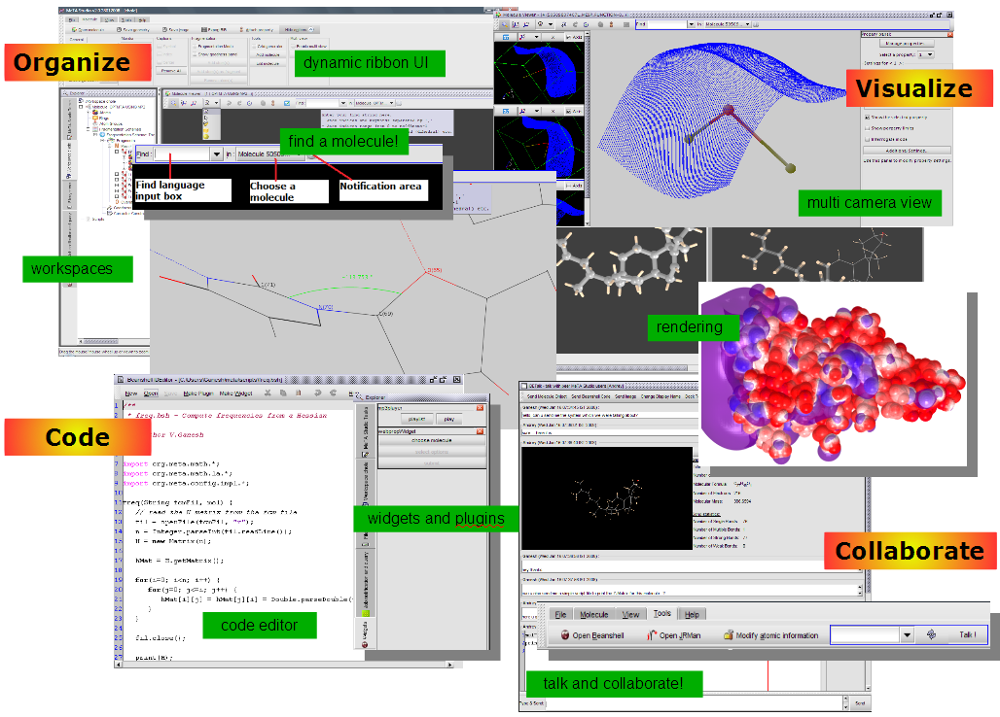

A sizable number of computational chemists (physicists, biologist and material scientists alike) use a wide variety of tools to perform computation, visualization and presentation. Many a times these are incompatible with each other, necessitating reliance on, often cumbersome, external tools to perform appropriate conversions. A few of the computational chemists also use mirid of programming environments to develop new computational codes or visualization tools. However, there is no environment that succinctly amalgamates programming environments and various tools available to a computational chemist, which many a times hinders easy integration and rapid application development. MeTA Studio, a cross-platform, programmable environment initially targeted towards computational chemists, intends to address this issue by promoting easy re-usability of codes and ways to develop new applications and methods based on existing code base. The platform consists of components that a computational chemist will need on a day-to-day basis: a molecule visualizer, graph plotting APIs, scripting support, a workspace environment, a collaboration framework and simple networking APIs. MeTA Studio environment can be either used as a tool, or programmed to include additional functionalities that are not already present, allowing researchers to have a fully customizable environment to experiment, collaborate and evolve the base platform.
Bread-and-butter tools for supporting day-to-day workflow of a computational chemists are available within MeTA Studio. The above figure depicts various activities that can be performed in MeTA Studio runtime environment. These activities can be broadly classified as: organize, visualize, code and collaborate. At a deeper level, these activities include: a visualizer, a rendering engine, support for reading common molecular file formats and outputs from popular quantum chemistry programs, a collaboration tool with talk facility to share ideas and data quickly among colleagues and a workspace environment for organizing work related files.